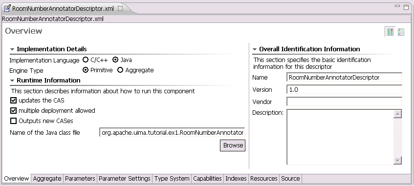
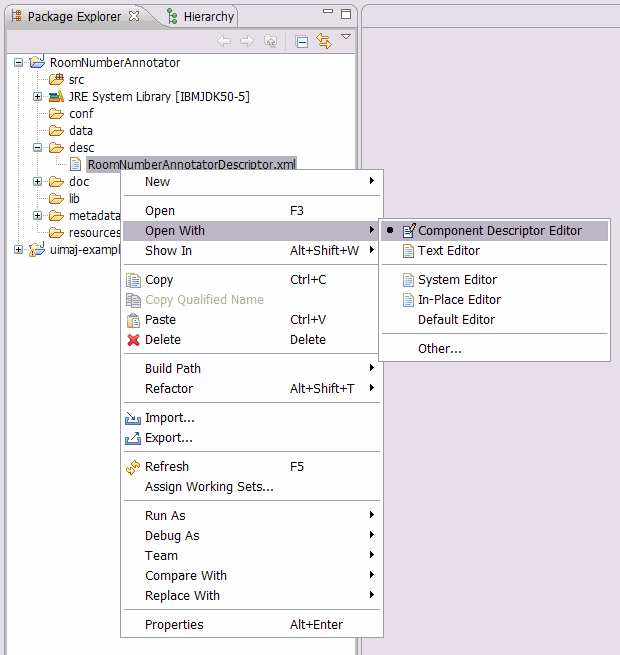
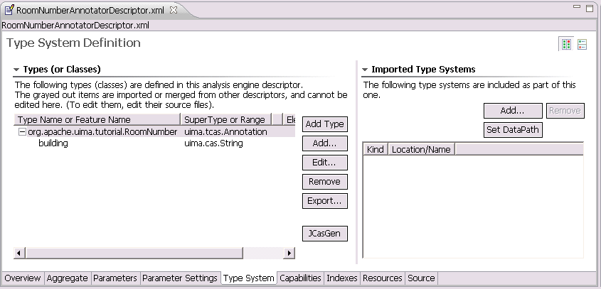
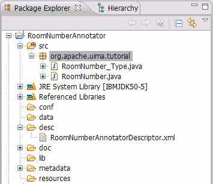

Before we can start implementing the annotator we have to create some meta data for the
annotator - the analysis engine descriptor. The analysis engine descriptor
contains information about the annotator that is accessible without
having access to the source code. It contains information like configuration parameters,
data structures, annotator input and output data types and the
resources that the annotator uses. The descriptor is also used by the UIMA framework
to load the annotator. Details about creating XML descriptors can also be found in the
UIMA documentation at
Creating the XML Descriptor.
To create a new analysis engine descriptor:
-
Right-click on the "desc" folder of your project and choose "New -> Other".
-
Select "Analysis Engine Descriptor" from the "UIMA" folder and press "Next".
-
Enter "RoomNumberAnnotatorDescriptor.xml" as file name, and press "Finish".
-
This creates a new skeleton descriptor file and opens it in the UIMA Component Descriptor Editor plugin.
For now, we just add the Java class name we will use later to implement the
annotator. Use "org.apache.uima.tutorial.ex1.RoomNumberAnnotator" as Java class name.
Select "File -> Save" or push "CTRL-S" to save this descriptor. A warning/error message
will appear saying that the classname you entered isn't found - that's true because
we haven't defined it yet, so just say OK and proceed. The Component Descriptor Editor
has many checks like this and will alert you if it finds things wrong, but it always
will let you save your work, anyway.

Next, we will define the output types that
the annotator produces. We have to do this before we start implementing the
annotator code since we will use the definitions later in our implementation.
All the data that is produced by annotators or exchanged between annotator
components is defined in the UIMA type system. The UIMA type system is part of
the analysis engine descriptor file so that each user or application
knows the types the annotator deals with. This is one of the main advantages of UIMA -
the data structures are declaratively specified and are stored inside the
UIMA framework. This increases the interoperability between components and allows including
components developed using different programming languages.
To make the definition of types easier, the UIMA framework has some pre-defined types. One of
them is uima.tcas.Annotation. Annotations are spans of text with a defined begin
and end position. Many text annotators inherit their own types from this base type. Another
pre-defined type is the uima.tcas.DocumentAnnotation that is used to store document
meta information like, for example, the document language. Some more details about the UIMA
type system and about the type system we will create for the RoomNumberAnnotator is available
in the UIMA documentation in the chapter
Defining Types.
After this brief UIMA type system instruction, let's start and model the type system that we
will use for the RoomNumberAnnotator. The annotator will detect room numbers, so we will create
an annotation type called org.apache.uima.tutorial.RoomNumber that is inherited from
uima.tcas.Annotation. Additionally we want to store some meta information
about the room we detected; therefore we will add a feature to the annotation
called building that will contain some additional building information about the
detected room.
You might be wondering about the prefix, "org.apache.uima.tutorial" in front of "RoomNumber".
This is the "namespace" - something you would choose to help insure that your use of the
name RoomNumber doesn't collide accidently with someone else use of that name. These
namespaces work like Java namespaces.
Let's go ahead and create this type system in the recently created analysis engine
descriptor. To add a new type to the descriptor:
-
Open the descriptor using the UIMA Component Descriptor Editor (CDE) by right-click to
the "RoomNumberAnnotatorDescriptor.xml" file and choose "Open With -> Component Descriptor Editor"

-
Select the "TypeSystem" tab at the bottom to show the type system definition page.
-
Press the "Add Type" button to add the new type. Use "org.apache.uima.tutorial.RoomNumber"
as type name and finish with "OK". The supertype "uima.tcas.Annotation" is correct.
We just added the first type to our RoomNumberAnnotator type system. Now we want to add an additional
feature to the created type to store the annotation meta information.
-
Select the "org.apache.uima.tutorial.RoomNumber" type by clicking it.
-
Click the "Add..." button to add a feature to the type and specify "building"
as feature name and "uima.cas.String" as range type.
This means that the "building" feature is a String based feature.
You can use Eclipse
"auto-complete" function for the super-type. For example, you may type an
"s" (the first letter of "String", even in lower case), and then press
the "CTRL-SPACE" key combination and see a list of suitable candidates - at
which point you can pick one with the mouse.
Finish the dialog by clicking "OK".
-
Save the descriptor file

That's all - we defined the UIMA type system for the RoomNumberAnnotator that we use later when we
implement the annotator code.
By default, the UIMA Component Descriptor Editor generates
the corresponding JCas classes for each type you define. Defaults may be changed by clicking on the
UIMA menu item, or using Eclipse's Windows -> Preferences -> UIMA menu.
You can also choose to manually
generate the JCas classes by following the steps below:
-
Open the descriptor file in the Component Descriptor Editor and select the "Type System" tab.
-
Press the "JCasGen" button that will trigger the Java class generation. The generated classes
will be added to the "src" folder of your project in a separate package.

Now all pre-work is done and you can start implementing the annotator source code.


 Getting Started: Writing My First UIMA Annotator
Getting Started: Writing My First UIMA Annotator